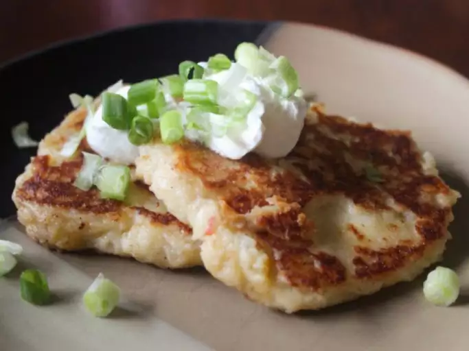

Potato Cake

Potato cakes are great for breakfast. Mashed potato cakes with a cheese surprise in the middle.
Ingredients
- 2 cups mashed potatoes
- 1 egg, beaten
- ½ cup all-purpose flour
- salt to taste
- 1 pinch garlic salt
- 1 tablespoon butter
- 1 cup shredded Cheddar cheese
Steps
- Melt butter in a large frying pan over a low heat.
- Drop pancake-size (4 inch circles) lumps of mashed potatoes into the frying pan.
- Pat to flatten to 1/2 to 1 inch thickness.
- Sprinkle some cheddar cheese onto the mashed potato cake.
- Spoon more potato mixture over the cheese.
- Flip the potato cake over when the bottom is browned (about 10 minutes).
- Brown the other side (about 10 minutes).